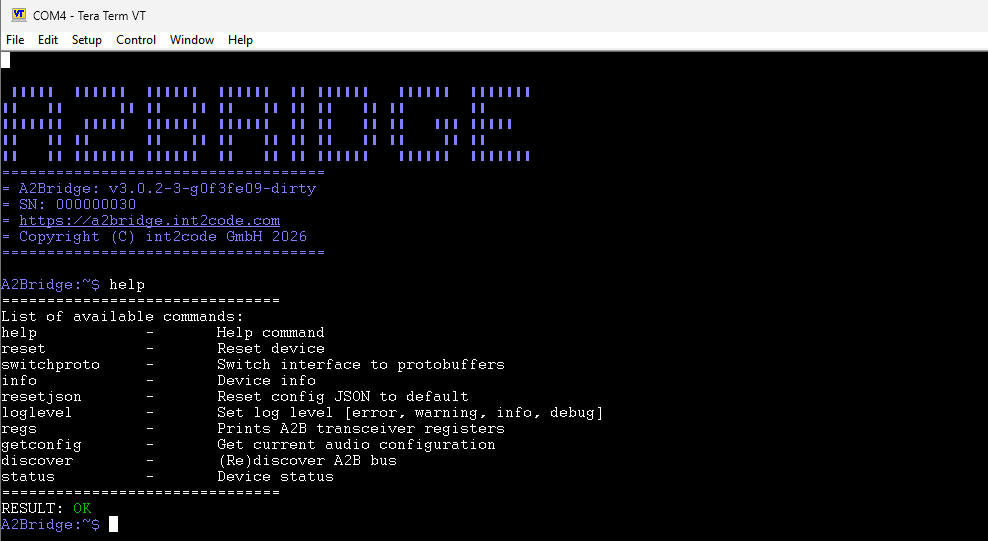

Serial COM port communication
Human readable console
After connecting to Host PC the A2Bridge will register in your PC a virtual COM port which can be used as a regular serial port for communicating with the A2Bridge over command line or python library. Since it is USB virtual COM port the baud rate can be set to any value.
Under Windows OS you can find the number of the COM port in the device manager. As a tool to work with the A2Bridge we suggest teraterm since, opposite to PuTTY, it doesn't request restarting the session every time the new configuration of the Bridge will be stored and the device restarts.
Under linux OS, you can find the corresponding serial port under /dev/ttyACMx. You can use

There are few commands available on COM console depending on the A2B mode configured.
Console commands in A2B Master mode.
Following console commands are available in Master mode:
help
Prints all available command's help.
reset
Resets the device. Invoking this command will cause the device to get disconnected from Host PC and reconnected after a while.
info
Prints the information about the device
A2Bridge:~$ info
Hardware revision: 1
Software version: v3.0.2-3-g0f3fe09-dirty
Serial number: 000000030
Chip used: AD2435
RESULT: OK
A2Bridge:~$
status
Prints the status of the device. Contains the information about the number of slaves discovered and current A2B status.
A2Bridge:~$ status
Device status:
Device state: Impaired
USB downstream: Idle
USB upstream: Idle
Config "Default" JSON: valid
A2B Cable diagnostic: No fault detected
Power Delivery: disconnected
A2B slaves discovered: 0
A2B status: Fault - timeout, at slave: 0
RESULT: OK
A2Bridge:~$
Device state can have following values:
- Imparied not all slaves configured to be present on the bus have been discovered
- Normal all configured slaves have been discovered and connected, ready to play audio ove A2B
- Error the device detected either configuration, A2B bus or internal error and must be restarted
The USB downstream & USB upstream can have values:
- Idle the host is not streaming audio data over the USB
- Streaming the host is streaming data over the USB
resetjson
resets the CONFIG.TXT Json file to default one.
discover
Triggers the A2B bus discovery process
switchproto
Switches COM port to protobuf mode. !!! info Attention: After calling this command you will be not able to use command line until reset of the device (assuming the corresponding configuration is set to command line - see RunInProtobufMode)
loglevel
Changes the log level. Must to be set to one of these values - "off", "debug, "info", "warning", "error". You can change the log level also using the configuration file. Changes done over command line will be not stored in the device. After restart the log level will be reset to the level configured in the config file.
regs
Prints the A2B transceiver registers and its values. If the number of subnode is provided (in master mode) then prints the register values from the subnode transceiver. Usage:
A2Bridge:~$ regs
...
A2Bridge:~$ regs 0
Console commands in A2B Slave mode.
Following console commands are available in Slave mode:
reset
Resets the device
info
Prints the information about the device
status
Prints the status of the device.
resetjson
Resets the CONFIG.TXT Json file to default one.
switchproto
Switches COM port to protobuf mode
Protobuf mode
Device can be switch to use the binary communication over protobuf protocol. In that case the ready to use python library available under: XAudio Lib
Reset
Resets the device
Message properties
None
Response
Positive or negative response.
Status
Sends the response with current status of the device depending on the A2B Role
Message properties
None
Response
Common for slave and Master mode:
usb_audio_downstream_state - Enumerate with current downstream USB state. Contains one of the following values:
USB_AUDIO_STREAM_STATE_UNSPECIFIED = 0;
USB_AUDIO_STREAM_STATE_IDLE = 1;
USB_AUDIO_STREAM_STATE_STREAMING = 2;
usb_audio_upstream_state - Enumerate with current upstream audio USB state.
USB_AUDIO_STREAM_STATE_UNSPECIFIED = 0;
USB_AUDIO_STREAM_STATE_IDLE = 1;
USB_AUDIO_STREAM_STATE_STREAMING = 2;
device_state - enumerate with current device status
DEVICE_STATE_UNSPECIFIED = 0;
DEVICE_STATE_BOOT = 1;
DEVICE_STATE_NORMAL = 2;
DEVICE_STATE_IMPAIRED = 3;
DEVICE_STATE_ERROR = 4;
CONFIG_JSON_STATE_UNSPECIFIED = 0;
CONFIG_JSON_STATE_VALID = 1;
CONFIG_JSON_STATE_INVALID = 2;
Master:
A2bFault - (optional) Structure containing the information about existing fault in A2B transceiver. This message has following properties:
fault - enumerate with current fault type on A2B transceiver
LIBAD243X_FAULTTYPE_NONE = 0,
LIBAD243X_FAULTTYPE_BECOVF = 1,
LIBAD243X_FAULTTYPE_SRF_MISS = 2,
LIBAD243X_FAULTTYPE_PWR_SHRT2GND = 3,
LIBAD243X_FAULTTYPE_PWR_SHRT2VBAT = 4,
LIBAD243X_FAULTTYPE_PWR_SHRT2GTHR = 5,
LIBAD243X_FAULTTYPE_PWR_OPEN = 6,
LIBAD243X_FAULTTYPE_PWR_REVERSE = 7,
LIBAD243X_FAULTTYPE_PWR_OTHER = 8,
LIBAD243X_FAULTTYPE_PWR_NL_SHRT2GND = 9,
LIBAD243X_FAULTTYPE_PWR_NL_SHRT2VBAT = 10,
LIBAD243X_FAULTTYPE_TIMEOUT = 11,
LIBAD243X_FAULTTYPE_MSTR_RESET = 12,
LIBAD243X_FAULTTYPE_OTHER = 13,
location - enumerate containing the location of fault source
LIBAD243X_FAULTSOURCE_MASTER = 0,
LIBAD243X_FAULTSOURCE_SLAVE = 1,
a2b_slaves_discovered - number of slaves discovered
Slave:
a2b_state - A2B slave state
SLAVE_A2B_STATE_UNSPECIFIED = 0; SLAVE_A2B_STATE_INIT = 1; SLAVE_A2B_STATE_WAIT_DISCOVER = 2; SLAVE_A2B_STATE_READY = 3; SLAVE_A2B_STATE_NOT_READY = 4; Info - Request information about the device Message properties: None Response:
hardware_revision - Hardware revision number
software_revision - String with software revision
serial_number - String with serial number
A2BDiscoveryRequest
Request A2B bus slave re-discovery
Message properties
None
Response
Positive or negative
I2cOverDistance
Send I2C command over A2B bus to one of the slaves or its peripheral.
Message properties
I2cOverDistanceAccessType - Access type enumerate:
I2C_OVER_DISTANCE_UNSPECIFIED = 0;
I2C_OVER_DISTANCE_WRITE = 1;
I2C_OVER_DISTANCE_READ = 2;
node - the index of the node to which the message will be sent or read.
Data - Data to send or read
reg - Register to read/write
value - Value to write in case of I2C_OVER_DISTANCE_WRITE access type
Response:
access_type - Access type enumerate:
I2C_OVER_DISTANCE_UNSPECIFIED = 0; I2C_OVER_DISTANCE_WRITE = 1; I2C_OVER_DISTANCE_READ = 2; value - the value read from the register
A2BMailboxTransfer
Request to read/write A2B mailbox.
Message properties
mailbox_id - Mailbox identifier
access_type - Access type enumerate:
A2B_MAILBOX_ACCESS_TYPE_UNSPECIFIED = 0;
A2B_MAILBOX_ACCESS_TYPE_WRITE = 1;
A2B_MAILBOX_ACCESS_TYPE_READ = 2;
bytes - length of the mailbox message (has to be lower than 4 bytes)
Response
mailbox_id - Mailbox identifier
access_type - Access type enumerate:
A2B_MAILBOX_ACCESS_TYPE_UNSPECIFIED = 0;
A2B_MAILBOX_ACCESS_TYPE_WRITE = 1;
A2B_MAILBOX_ACCESS_TYPE_READ = 2;
A2B_MAILBOX_STATUS_UNSPECIFIED = 0;
A2B_MAILBOX_STATUS_OK = 1;
A2B_MAILBOX_STATUS_GENERAL_FAIL = 2;
A2B_MAILBOX_STATUS_NOT_EMPTY = 3;
A2B_MAILBOX_STATUS_NOT_FULL = 4;